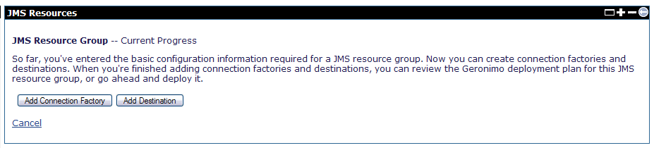
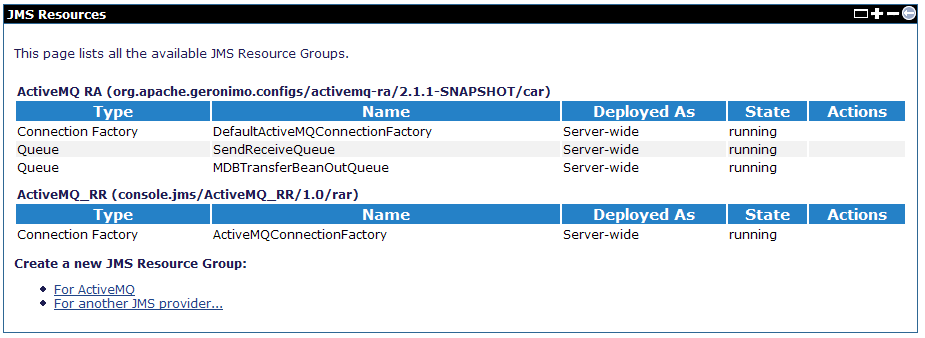

This article demonstrates how to configure a JMS resource group and how to uninstall it by using the Geronimo Administration Console.
Create a new JMS resource group
Create a JMS resource group means to deploy a module connector on Geronimo that includes at least 2 resource adapters, a connection factory, and a destination.
You can use the following steps to create a JMS resource group:
- Select the For ActiveMQ setup wizard from the JMS Resource portlet. On the setup page, enter the property information for your JMS resource group and click Next.

- On the next page, you can choose to add a Connection Factory or a Queue Destination by clicking the Add Connection Factory or the Add Destination button respectively.

- If you choose to add a Connection Factory, you will see the following wizard page. Select the type of JMS Factory from the drop-down menu and click Next.

- On the next page, provide the properties for your connection factory and click Next. For this example, the connection factory is named as
ActiveMQConnectionFactory.

- On this page, you now have the option of adding the connection factory, adding a queue destination, showing the plan for this operation, or deploying the new connection factory. Add the resource adapters that you need by clicking the Add Connection Factory or the Add Destination button according to the type of the resource adapter that you want to add. Click Deploy now to deploy the new connection factory.

- Your new connection factory should be running and ready to create new connections.

Uninstall the JMS resource from Console
- On the left navigation panel, select J2EE connectors.
- Click Uninstall behind the JMS resource to be uninstalled, for example,
console.jms/jmsResources/1.0/car.